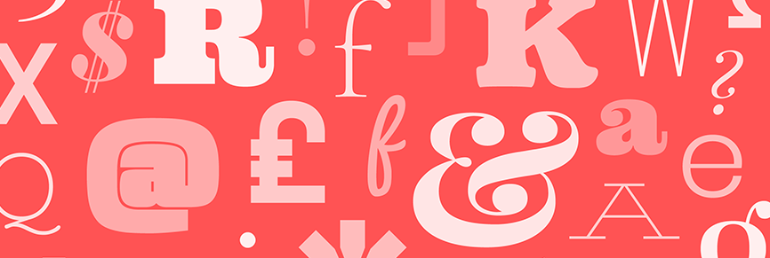
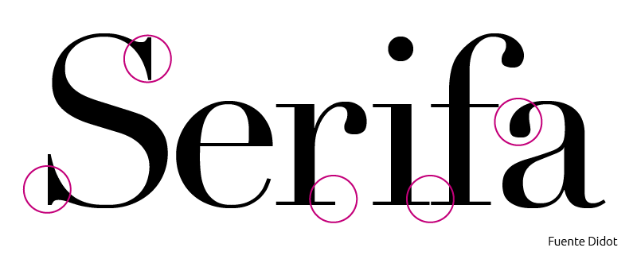
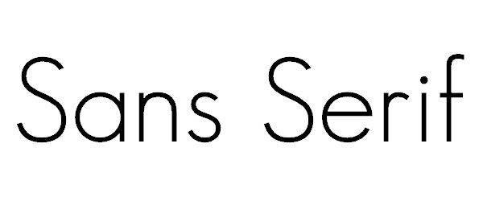
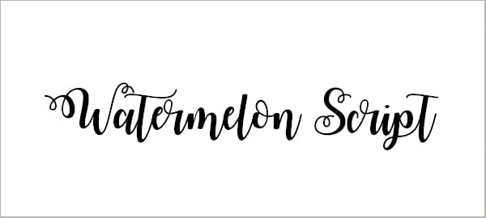
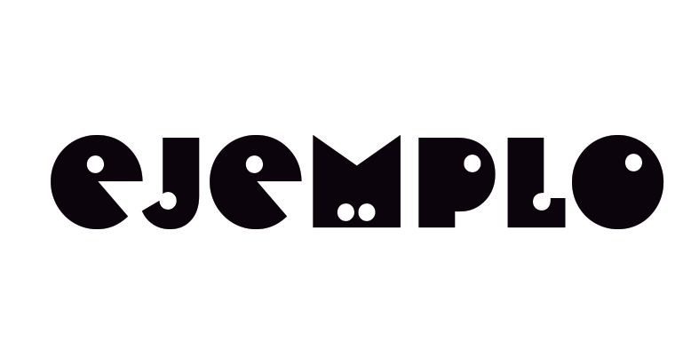
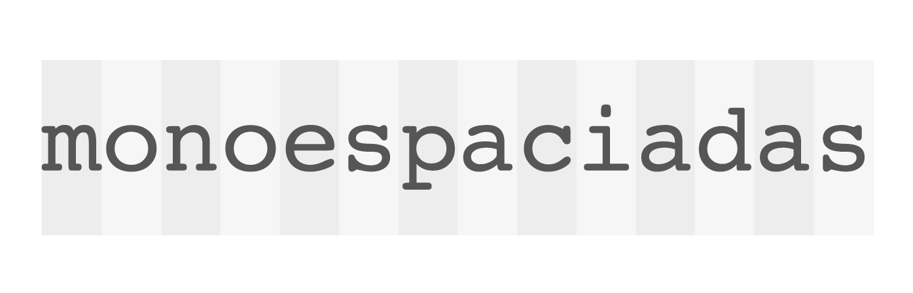

¿Qué es la tipografía?
Los textos son la base de la mayoría de sitios web ya que lo más normal es transmitir la información mediante letras. Por este motivo se han diseñado diferentes tipografías. Así dependiendo de la circunstancia podemos usar un tipo de fuente u otro.
Tipos de tipografía
Serif
Incluye una ligera proyección que termina los trazos de las formas de las letras.
Sans Serif
No incluye ninguna proyección al final de los trazos de las formas de las letras.
Script
Se basan en los trazos fluidos parecidos a la escritura a mano.
Decorativa
Son tipografías diseñadas con fines específicos, sin tener especialmente en cuenta la legibilidad.
Monoespaciada
Cada letra ocupa la misma cantidad de espacio horizontal en la pantalla.
